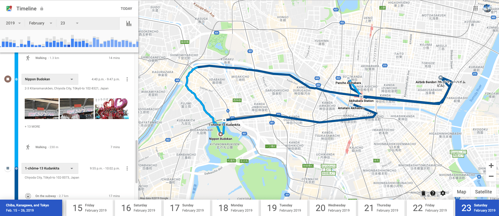

Product Design
Travel Stories
Capturing travel experiences through journaling
about
Travel Stories is a journaling app that helps travelers capture their feelings and experiences. The journaling process is made easier through timeline syncing and a prompt based system.
role
UX Designer
context
Individual student project
timeline
6 Weeks (2019/04-05)
Revisit: 3 Weeks (2019/09)
methods
User Interviews
Personas
Value Proposition Canvas
User Journey Map
Card Sorting
Wireframes
High Fidelity Mockups
PROBLEM
Memories are fleeting
Many travelers want to record the details of their adventures, but journaling is often seen as a laborious task that is difficult to fit into a hectic travel schedule. Having to sit down at the end of a long day to write is enough to turn away many prospective journalers despite their desires to capture their travel stories. The longer it is put off, the easier it is to forget the details of even the most memorable experiences.
SOLUTION
Travel Stories
Travel Stories is a travel journal app that makes the journaling process easier. The main idea is that capturing just a bit of the context and details of an experience is often enough to bring back those memories. Taking the small effort to capture these moments in the present will help immortalize them in time.
Timeline Syncing
The locations visited throughout the day are automatically tracked and synced to a timeline along with any photos taken.
{kind=link}
Prompt Based Journaling
Prompts are suggested based on the location visited. There is always the option to enter custom prompts.
{kind=link}
Expanding on Prompts
The short prompts can be answered with minimal effort while on the move, whereas the optional longer responses can be expanded on later when there is more time to spare.
{kind=link}
PROCESS
Journey of Exploration
Competitor Analysis
There are many apps out on the market that target similar goals and audiences, so I wanted to investigate and see how Travel Stories can offer a unique advantage.
Snapchat/Instagram Stories
Many people already use these social media platforms to share their adventures; however, these stories are often lacking in context and travel specific features to capture a complete story.
Polarsteps
This is a popular app that also does similar tracking for travel journaling. What it lacks is a way to make the journaling process easier as it mostly involves writing long responses. Their focus is more on creating a log that can be turned into a travel book afterwards.
Google Maps Timeline
This is a hidden feature of Google Maps that actually does a great job of tracking location on a timeline with photos, but it lacks any journaling features. Expanding on this timeline concept is a good starting point for a new product.
{kind=link}
User Interviews
I conducted user interviews in order to gain a better understanding of travelers. I was actually traveling at that moment, which presented a great opportunity to interview people in my target demographic. I talked to 5 people at the airport to get their perspective on journaling.
My main research questions were to find out:
- Whether participants have tried travel journaling and any difficulties they encountered
- What aspects of traveling do they want to remember/reflect on
One way I tried to dig deeper into their thoughts was to ask them to describe a recent memorable travel experience. This was an indirect way to see what they value most about traveling as people feel more engaged describing a past experience than answering questions without context.
Some useful insights I discovered:
- Most participants saw the appeal of journaling, but could not build a habit doing it
- Visual aids such as photos helped “bring them back good memories”
- One participant valued recording feelings rather than details on what they did
- Another said they used past journal entries as a way to look forward to future plans
Persona
With the insight gained from the interviews, I put together a persona to represent my target user.
{kind=link}
Jen is an adventurous freelancer who travels for months at a time. She desires to record her experiences and feelings before any details are forgotten. However, she has a very busy schedule, often balancing remote work with travel, so she does not have much time for writing in between.
Developing this persona helped to keep me aligned with my goals of making a hassle free journaling app for a user that is on the move and doesn’t have much time for a traditional format journal.
User Journey Map
{kind=link}
This user journey map for the persona shows the current pain points with trying to keep a travel journal. It presents opportunities where I can improve on the experience such as giving quick prompts to make writing easier on the go. This priority was not seen in competitor apps. With the right prompts, journaling will take less time and the resulting entries can provide more value in the reflection phase.
Card Sort
In order to organize the various features and values for the app, I conducted a Card Sort activity with some classmates. The goal was to arrange these concepts into logical groups and see how they can be structured.
{kind=link}
{kind=link}
{kind=link}
The interesting part of these results is how differently people categorized the groups. These differences reflect on their mental model of how they framed the problem and solution. This activity helped inform me about the user flow and priorities of the app.
Wireframes
This wireframe shows the basic flow of the application and how an external notification trigger can start the prompt flow as shown in the bottom left.
{kind=link}
High Fidelity Mockups
These are the high fidelity mockups I created as the final deliverable for this phase.

REVISIT
Can't see everything on the first trip
All of the work above was originally done at the beginning of my program at Emily Carr in Spring 2019. Near the end of our program in Fall, we were given the opportunity to revisit a previous project and refine where we feel it's lacking. I chose to come back to this app and update the UX and UI design.
The changes made here are a reflection of my growth as a designer both in terms of design thinking as well as visual design skills.
Value Proposition Canvas
{kind=link}
I used the Value Proposition Canvas to find the product market fit between the products and features I am offering and the needs of my target users. By mapping out the gains and pains along with ways to create or relieve them, I can see where there might be gaps in the current product fit.
Revisiting my product with this canvas helped me see that the old way of doing prompts did not really fit with the goals of a person wanting to record their full experiences. These prompts were too narrow and restricted the creative possibilities of journal writing.
I redesigned the prompts to focus on the goal of being quick to write while still allowing creative freedom. The suggested prompts will be based on the context of the location. The user can also enter their own if they have something in mind.
{kind=link}
{kind=link}
These prompts are a good jumping off point to create higher quality journal entries while avoiding writer’s block. Having both a short and long response field creates a balance between respecting the traveler’s time while still allowing for in-depth writing. Answering with a quick response while in the moment can help later kickstart the writing process for deeper introspection.
UI Redesign
The original focus in this project was on the UX process, so not as much time was spent on visual design. During this redesign, I took the chance to revisit the UI and apply a more cohesive style. I tried to incorporate common UI patterns from the Apple Human Interface Guidelines to create a modern yet familiar looking app.
{kind=link}
The new branding strategy aims to keep the app looking approachable, yet modern. This blue palette fits more with the traveling theme and the typeface Gibson was chosen for a more humanistic, welcoming style. The logo itself was kept neutral to prevent association with any particular mood as people travel and write in different ways.
Cards are used to break down a trip into multiple days. Each card will have a timeline along with locations, photos, and journal entries.
{kind=link}
Tapping on a card reveals the timeline and the embedded journal entries. This helps keep everything in context and the entire day can be read as a narrative rather than individual pieces.
{kind=link}
{kind=link}
OUTCOMES
Where do I go next?
Future Work
The current prototype just explores the prompt and timeline aspects of this app. The next directions to look at would be the sharing and journaling features.
There was a big desire for travelers to share their adventures with others. One way these entries can be shared would be to curate a story with top destinations from that trip. Each entry has a star beside it where it can be saved to the Stories tab. From there, users can hand pick which entries they want to share with others.
There is also a Journal tab that can be used for free-form journaling. While quick prompts and location syncing are great for on the go journaling, users might want a place to write thoughts separate from travel or have a place to jot down notes or ideas like a traditional journal.
Personal Lessons
Being able to revisit this project was a great opportunity to improve on an existing idea that I didn’t explore to its potential. This concept came up early in my program, but going through it again with new perspective allowed me to see the gaps in my previous thinking.
It also gave me more confidence seeing how my UI skills have improved in a short time. Even though I am more interested on the UX side, being able to produce high quality visuals is an important part of being a well-rounded designer.
next project